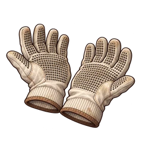

Guanti di cotone
R Accessori
Guanti bianchi con puntini antiscivolo: i fermi delle trappole si chiudono bene.
Panoramica
| Parte | Accessori |
|---|---|
| Rarità | R |
| HP al Lv1 | 13 |
| HP stabili per livello | 1 |
| Tasso di crescita HP | x1.04 |
| Gacha | Gacha normale: Dalla fase 1 (Striscione 1, Striscione 2, Striscione 3, Striscione 4, Striscione 5, Striscione 6, Striscione 7, Striscione 8, Striscione 9, Striscione 10) Gacha a pagamento: Dalla fase 1 (Striscione 1, Striscione 2, Striscione 3, Striscione 4, Striscione 5, Striscione 6, Striscione 7, Striscione 8, Striscione 9, Striscione 10) |
competenze
- Danno da trappola +5%
HP per livello
HP al livello L = round(base HP x crescita^(L-1)) + floor(appartamento per livello x (L-1))
| Lv | HP |
|---|---|
| Lv1 | 13 |
| Lv10 | 28 |
| Lv20 | 46 |
| Lv30 | 70 |
| Lv50 | 138 |
| Lv99 | 705 |
Il limite di livello inizia da 20; ogni duplicato lo aumenta di 10, fino a 99.